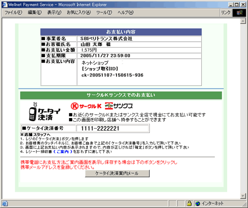
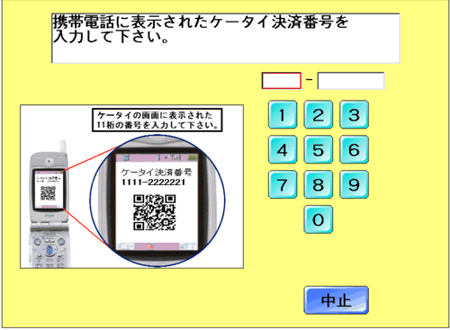
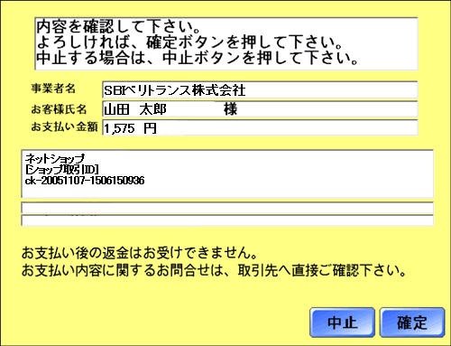

お客様がご注文された商品の代金は、お近くのサークルKまたはサンクス店頭にて現金でお支払いください。
※コンビニ店頭での変更・払戻しはできませんので、予めご了承ください。
画面上にて、「オンライン決済番号」または「払込依頼票のURL」を表示いたします。
もしくは、画面上の指示に従い、お手持ちの携帯電話に、支払い方法をご案内するメールを送信してください。

「オンライン決済番号」のメモまたはプリントアウトした「払込依頼票」またはお持ちの携帯電話に転送した
け
を持参してください。
「オンライン決済番号」もしくはプリントアウトした「払込依頼票」をレジにご提示いただき、
店員に「オンライン決済」とお伝え下さい。
レジのお客様側の画面に、「オンライン決済番号」を入力（タッチパネル）し「確定ボタン」をタッチしてください。
なお、お支払いは「現金」となります。
※コンビニ店頭での変更・払戻しはできませんので、予めご了承ください。


お支払い後、「オンライン決済領収書」をお渡しいたします。実際に代金をお支払いされたことを
証明する書類ですので、大切に保管してください。
店舗側で入金を確認次第、商品配送の手配をいたします。